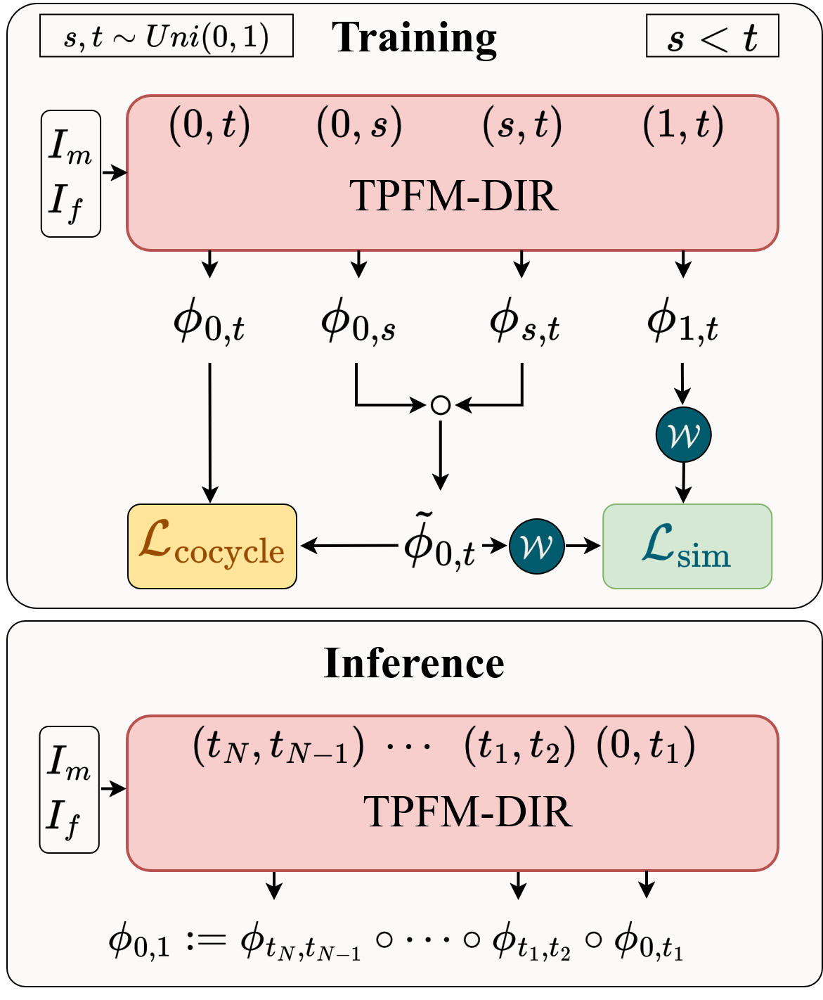
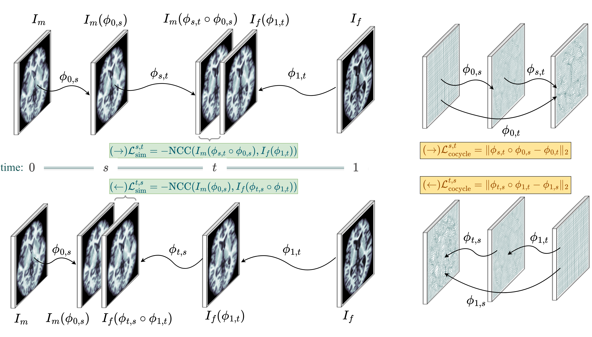
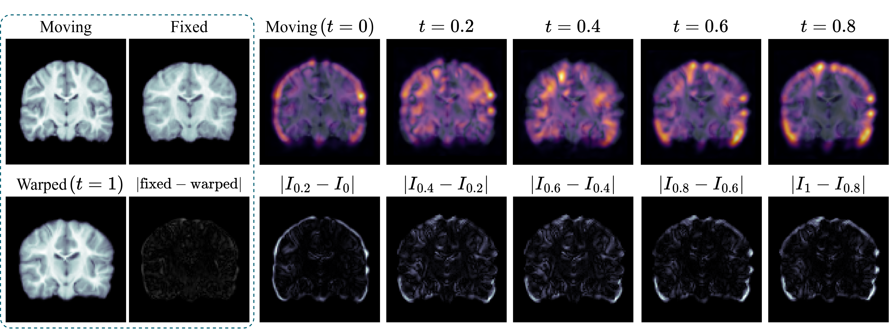
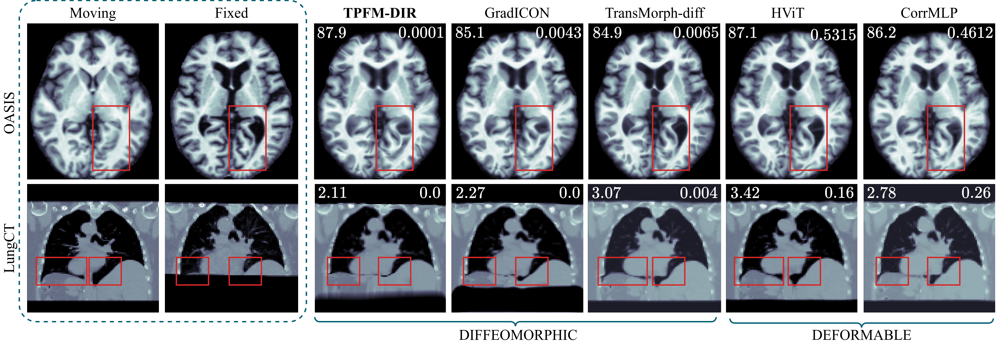
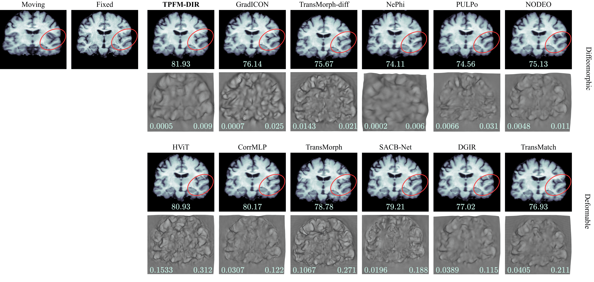
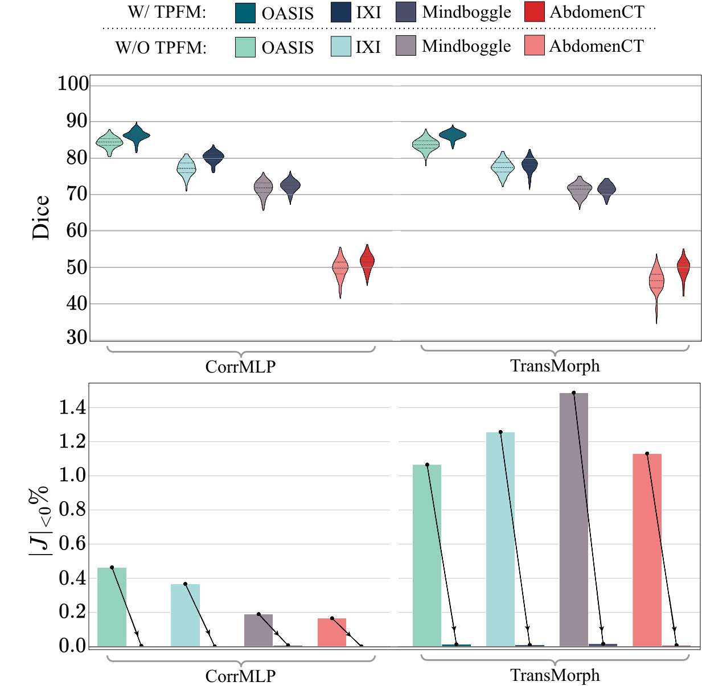
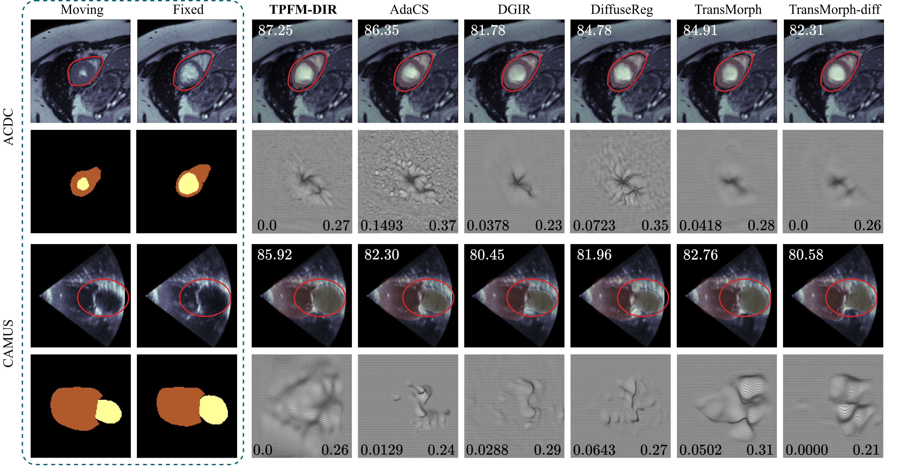

Sample result of TPFMDIR over a sample of LPBA40 dataset.
Abstract
Diffeomorphic image registration is central to medical image analysis, enabling anatomically consistent alignment across subjects.
Most learning-based diffeomorphic methods model autonomous ODEs (ordinary differential equations) by parameterizing a stationary
velocity field and recovering deformations via scaling-and-squaring. While non-autonomous ODEs with time-dependent velocities increase
expressiveness, existing approaches rely on numerical integration to implicitly enforce flow structure that entangles model expressiveness
with discretization accuracy. We propose a framework to directly learn the continuous-time solution of a non-autonomous ODE formulated as
a two-parameter flow map. By enforcing cocycle consistency, a fundamental structural property of time-varying flows, we learn the
flow maps without time discretization and velocity integration during training. The framework recovers diffeomorphic mappings at inference
using a small number of compositions. Our proposed framework seamlessly incorporates standard registration backbones and improves alignment
accuracy consistently across nine datasets while preserving diffeomorphic structure. Notably, the proposed method achieves an average Dice
improvement of 2.1% on brain MRI benchmarks, a 12% TRE reduction on lung CT, and a 2.6\% Dice gain on cardiac MRI and ultrasound datasets.
Presentation Video
TPFMDIR in a Nutshell
TPFMDIR is a registration framework; it is architecture-agnostic as long as the architecture supports time injection and is appropriately designed for image registration
TPFMDIR has only one regularization term (anchored cocycle regularization) and provably recovers the solution of a non-autonomous ODE
(an ODE with time-dependent velocity field).
TPFM-DIR extends previous SGDIR framework from autonomous ODEs to non-autonomous ODEs with minimal
structural changes and without losing theoretical guarantees.

TPFMDIR Methodology
To model a diffeomorphism $\phi$ warping a moving image $I_m$ to a fixed image $I_f$, TPFMDIR learns the solution of a non-autonomous ODE
Note that, for the non-autonomous ODE, the solution depends on both the initial time $s$ and the end time $t$, whereas for the stationary
case, the solution only depends on the elapsed time. This is the reason the solutions are called two-parameter family.
Usually, to find the solution of such non-autonomous ODEs, the velocity field $v(., t)$ is modeled and the
solution is obtained by expensive numerical integrations such as RK4 method. The cost of such methods for the
task of medical image registration which usually deals with large images, has caused this type of modeling to be
largely overlooked.
TPFMDIR mitigates this issue and directly models the two-parameter flow map solution of the ODE and learns the diffeomorphism
without velocity parameterization, without any numerical integration, and withour multiple regularization terms.
To this end, TPFMDIR introduces a anchored cocycle regularization as the only regularization term and employs
a time-dependent loss function, which provably drives the model towards learning the ODE solution, hence inheriting
their smoothness and diffeomorphic properties.

Importantly, we show that the full cocycle property is deducible from the anchored cocycle regularization.
Practically, we don't need independent time poinst $r$, $s$ and $t$ to impose the full cocycle; rather, only using time
points $s$ and $t$ suffices for a guaranteed learning of the ODE solution:
Moreover, we show that without any numerical differentiation, one could extract the learned underlying instataneous velocity field governing
the dynamics of the ODE.

Results Summary
TPFMDIR is evaluated on 9 2D/3D datasets: OASIS, IXI, LPBA40, Mindboggle101, CANDI, LungCT, AbdomenCTCT, ACDC, and CAMUS
TPFMDIR is compared with more than 15 strong baselines including GradICON, NODEO, NePhi, TransMorph, TransMatch, DiffuseReg, HViT, CorrMLP, SACB-Net, etc.

Method
OASIS
IXI
LPBA40
Mindboggle101
CANDI
$\text{DSC} \uparrow$
$|J_\phi|_{<0}\% \downarrow$
$\text{DSC} \uparrow$
$|J_\phi|_{<0}\% \downarrow$
$\text{DSC} \uparrow$
$|J_\phi|_{<0}\% \downarrow$
$\text{DSC} \uparrow$
$|J_\phi|_{<0}\% \downarrow$
$\text{DSC} \uparrow$
$|J_\phi|_{<0}\% \downarrow$
LDDMM
76.59
0.0064
67.90
0.0034
69.23
0.0011
64.57
0.0061
78.52
0.0017
TransMorph-diff
83.51
0.0066
75.98
0.0142
70.98
0.0086
69.45
0.0364
83.20
0.0026
GradICON
83.74
0.0039
76.43
0.0018
74.21
0.0011
70.78
0.0117
83.29
0.0015
HViT
85.07
0.4812
80.67
0.5933
76.57
0.4428
71.80
1.4051
83.67
0.1368
CorrMLP
84.66
0.4640
77.54
0.3675
75.72
0.0145
71.92
0.1895
81.96
0.0098
SGDIR $(\lambda=10^5)$
85.90
0.0003
80.18
0.0
77.13
0.0
71.58
0.0004
84.50
0.0003
SGDIR $(\lambda=10^4)$
87.82
0.3982
83.88
0.6036
78.93
0.1821
73.59
0.6512
85.51
0.0473
TPFMDIR
87.08
0.0019
82.52
0.0015
77.87
0.0005
74.79
0.0012
84.77
0.0001

Sample results and comparison on the IXI dataset. Folding percentage as $|J_\phi|_{<0}\%$ and SDLogJ metrics are shown in the lower left
and the lower right corners of deformations. Dice scores are reported at the bottom of each warping result.

Effect of training different architecture with and without TPFMDIR framework on accuracy and regularity.
Method
LungCT
$\text{TRE} \downarrow$
$|J_\phi|_{<0}\% \downarrow$
GradICON
2.64
0.0009
SACB-Net
3.01
0.9824
SGDIR $(\lambda = 10^5)$
2.37
0.0
TPFMDIR
2.19
0.0
Method
AbdomenCTCT
$\text{DSC} \uparrow$
$|J_\phi|_{<0}\% \downarrow$
NePhi
45.32
0.0008
SACB-Net
53.38
0.9348
SGDIR $(\lambda=10^5)$
53.64
0.0
TPFMDIR
54.54
0.0002
Method
ACDC
CAMUS (ultrasound)
$\text{DSC} \uparrow$
$|J_\phi|_{<0}\% \downarrow$
$\text{DSC} \uparrow$
$|J_\phi|_{<0}\% \downarrow$
DiffuseReg
83.31
0.2345
77.29
0.4026
AdaCS
85.46
0.1493
82.67
0.0029
SGDIR $(\lambda = 10^5)$
85.79
0.0
83.91
0.0
TPFMDIR
87.42
0.0002
85.12
0.0

Sample results and comparison on the ACDC and CAMUS datasets.